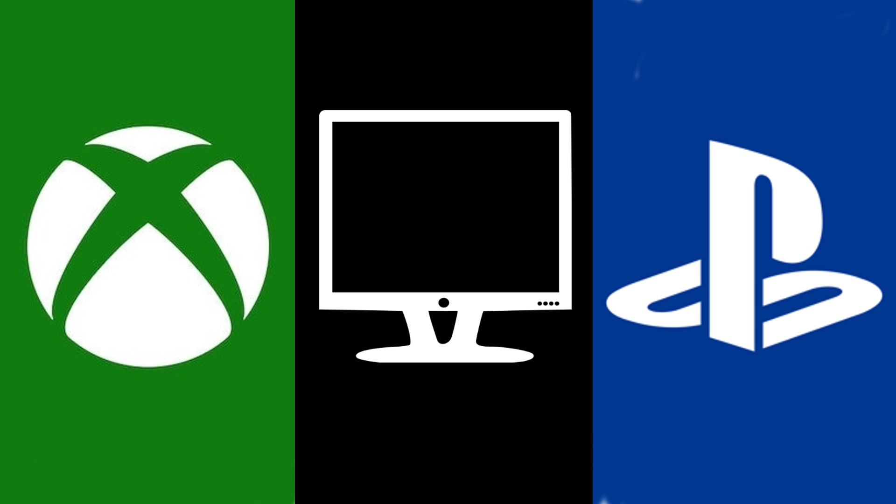

Faça seu login
Mapa do Jogo
Este mapa feito por fans pode mostrar o quão grande pode ser o tamanho deste mapa.
Desde que o primeiro trailer de GTA 6 (Grand Theft Auto VI) foi revelado em dezembro de 2023, os fãs ficaram em muito animados.
A confirmação de que o jogo se passará em Vice City reacendeu a nostalgia de quem jogou o clássico dos anos 2000, mas também levantou uma dúvida importante: será que essa é toda a extensão do mapa ou só o ponto de partida?
Pelo contrário: a cidade inspirada em Miami parece ser apenas uma peça de um mapa muito mais ambicioso, e isso tem deixado os fãs ainda mais curiosos.
O próprio trailer já mostrou pistas: há pântanos, regiões tropicais, e até airboats (aqueles barcos com hélice usados em áreas alagadas).
Isso sugere que poderemos explorar áreas inspiradas nos Everglades, talvez até ilhas separadas no estilo de Key West.

Mais informações sobre o loançamento
A Take-Two, empresa-mãe da Rockstar Games, já afirmou que o marketing de GTA 6 será “curto e direto”.
Ou seja, só veremos novo trailer ou data exata de lançamento quando o jogo estiver próximo. Pra ser mais direto
o que temos são suposições muito sólidas de que GTA 6 chegará no final de 2025, possivelmente entre outubro e novembro,
aproveitando o auge do consumo na Black Friday e no Natal.

Software
O GTA 5, que vendeu mais de 190 milhões de unidades, chegou primeiro em 17 de setembro de 2013 para PlayStation 3 e Xbox 360. As versões para PlayStation 4 e Xbox One só foram lançadas em 18 de novembro de 2014. Já o GTA 5 para PC só ficou disponível em 14 de abril de 2015, ou seja, um ano e meio depois do lançamento para consoles.
O público considera que haverá um tempo de espera semelhante para que o GTA 6 seja disponibilizado no PC, já que a Rockstar tem o costume de deixar os computadores em segundo plano.
E provavelmente o jogo só vai para chegar para a nova geração de consoles, como o ps5 e os xbox series S e X. Há boatos
que o jogo ainda vai travar em ps5, um console extremamente potente.


Aviso - Estes 2 links irão redioreciona-lo para 2 sites diferentes fora desta plataforma